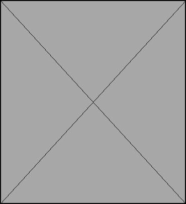

Immersive Touch
Immersive Touch is a closed-loop rehabilitation wearable device for Complex Regional Pain Syndrome. Soft pneumatic actuation delivers passive tactile input, bilateral sensors track pressure and temperature in real time, and AR/VR gameplay turns desensitization into play, while every session compiles into a report clinicians can trust.